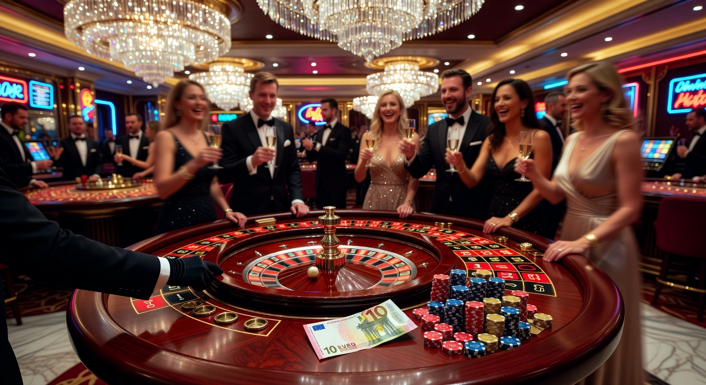
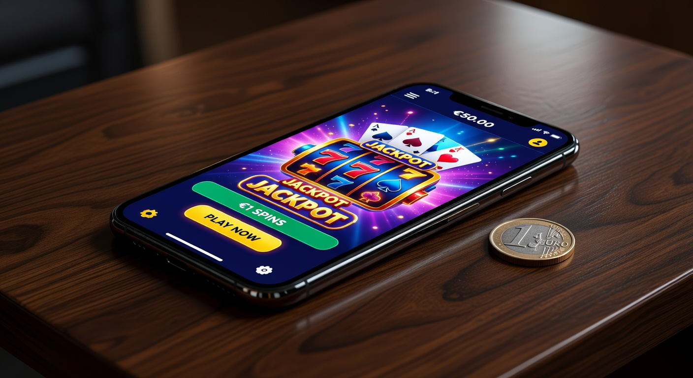
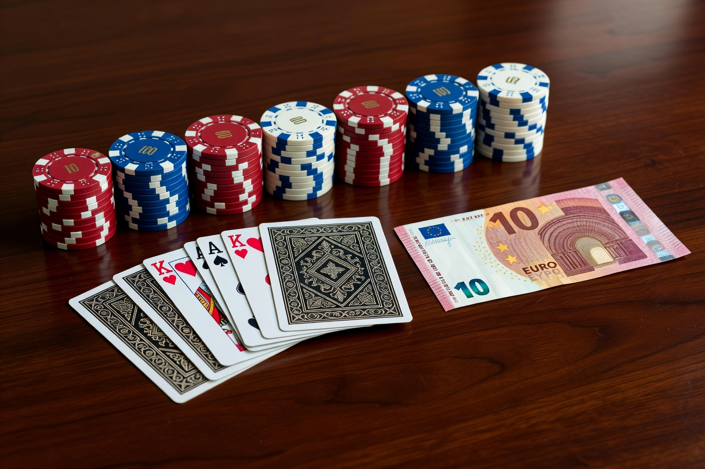
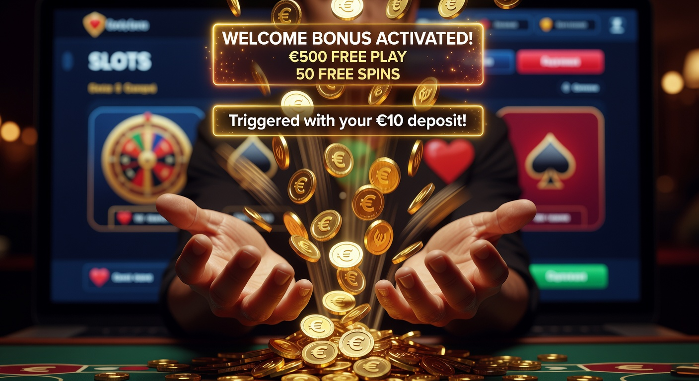
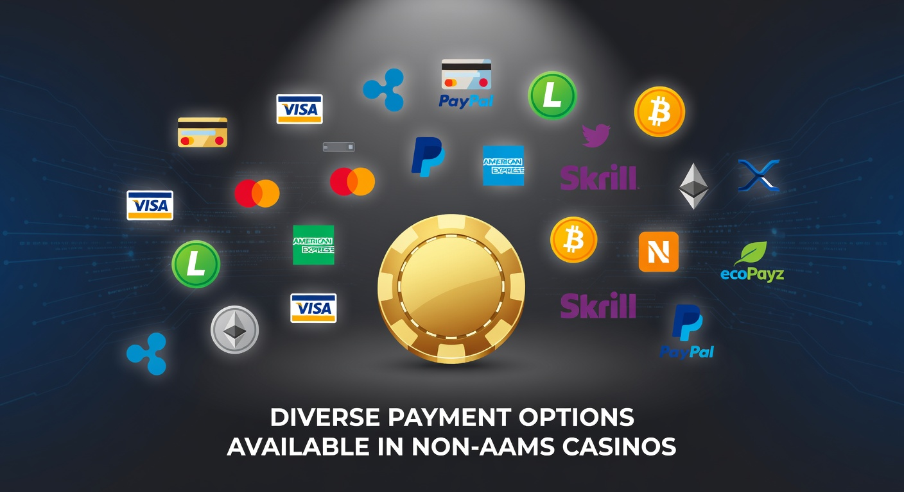

Casinò non AAMS deposito 10 euro: Guida ai migliori siti sicuri
Nel panorama del gioco digitale del 2026, la ricerca di flessibilità e accessibilità ha portato sempre più utenti verso soluzioni che permettono di iniziare l'esperienza ludica con un investimento contenuto. Un casinò non AAMS deposito 10 euro rappresenta oggi il punto di equilibrio ideale per chi desidera testare una vasta gamma di giochi senza impegnare capitali elevati. Queste piattaforme, pur operando al di fuori del circuito dell'Agenzia delle Dogane e dei Monopoli (ADM), offrono standard di sicurezza elevatissimi e licenze internazionali riconosciute a livello globale.
Il mercato europeo e internazionale ha visto un'evoluzione tecnologica senza precedenti negli ultimi dodici mesi. Grazie all'implementazione dell'intelligenza artificiale per la personalizzazione dell'esperienza e all'adozione massiccia della blockchain, ogni casinò non AAMS deposito 10 euro selezionato in questa guida garantisce transazioni istantanee e una protezione dei dati personali impenetrabile. La scelta di un operatore estero non è più solo una questione di bonus più ricchi, ma una ricerca di innovazione che spesso le piattaforme locali faticano a seguire con la stessa rapidità.
Esploreremo in dettaglio come navigare in questo settore, quali sono i criteri per identificare un sito affidabile e come massimizzare il valore del proprio deposito minimo attraverso le promozioni più vantaggiose del 2026. Che siate amanti delle slot machine di ultima generazione o preferiate l'adrenalina dei tavoli live con croupier dal vivo, la soglia d'ingresso di dieci euro apre le porte a un intrattenimento di qualità superiore.
Perché scegliere un casinò con ricarica minima di 10€?
Optare per un casinò non AAMS deposito 10 euro offre una serie di vantaggi strategici, specialmente per i giocatori che amano variare spesso piattaforma. In primo luogo, questa cifra permette di attivare la quasi totalità dei bonus di benvenuto disponibili sul mercato. A differenza delle ricariche da 1 o 5 euro, che spesso escludono l'utente dalle promozioni principali, i 10 euro sono considerati lo standard universale per sbloccare raddoppi del versamento e pacchetti di giri gratis.
Un altro aspetto fondamentale riguarda la gestione del rischio. In un'epoca in cui il gioco responsabile è al centro delle politiche di ogni operatore serio, poter impostare un budget iniziale ridotto aiuta a mantenere il controllo sulle proprie finanze. Molti utenti utilizzano il deposito minimo di 10 euro come una sorta di "test drive" per valutare la fluidità dell'interfaccia mobile, la rapidità dei pagamenti e la qualità dell'assistenza clienti prima di procedere con versamenti più consistenti.
Inoltre, le piattaforme internazionali che accettano questa soglia minima dispongono spesso di un catalogo di giochi estremamente vasto, che include titoli non ancora distribuiti nel circuito italiano. Questo significa poter accedere a meccaniche di gioco innovative, jackpot progressivi internazionali e tornei con montepremi che superano regolarmente i milioni di euro, il tutto partendo da una spesa equivalente a un pranzo veloce.
Classifica dei migliori casinò non AAMS con deposito 10 euro

Per aiutarvi nella scelta, abbiamo analizzato decine di operatori attivi nel 2026, filtrandoli in base alla sicurezza, alla velocità dei prelievi e alla qualità del palinsesto. Di seguito troverete i brand che si sono distinti per l'eccellenza del servizio offerto a chi cerca un casinò non AAMS deposito 10 euro di alto profilo.
WildTokyo: Un'esperienza di gioco futuristica
Il casinò WildTokyo si conferma come uno dei leader del settore nel 2026 grazie a un'estetica ispirata alle luci di Tokyo e a una funzionalità impeccabile. Questo operatore permette di accedere a un mondo di intrattenimento con un deposito minimo molto accessibile, offrendo un pacchetto di benvenuto che combina bonus monetari e free spin sulle slot più popolari del momento. La loro piattaforma è rinomata per l'efficienza del sistema di prelievo, che elabora le richieste quasi in tempo reale per gli utenti verificati.
Pistolo: Semplicità e pagamenti immediati
Se cercate un'interfaccia pulita e senza fronzoli, Pistolo è la scelta ideale. Questo casinò non AAMS deposito 10 euro si focalizza sull'essenziale: velocità di caricamento e una selezione curata dei migliori provider mondiali. Il sistema KYC è snello e permette di validare il conto rapidamente, garantendo che i vostri guadagni possano essere ritirati senza lungaggini burocratiche. È particolarmente apprezzato da chi gioca prevalentemente da smartphone, grazie a un'app web estremamente leggera.
Millioner: Il top per i grandi premi
Nonostante il nome suggerisca alte scommesse, Millioner accoglie a braccia aperte chi desidera iniziare con un casinò non AAMS deposito 10 euro. La piattaforma si distingue per un programma fedeltà che premia ogni singola giocata, trasformando anche le piccole ricariche in punti accumulabili per premi esclusivi. La varietà di giochi disponibili è impressionante, con una sezione live che vanta oltre 200 tavoli attivi 24 ore su 24.
Dragonia: Fantasy e innovazione
Per gli amanti delle ambientazioni epiche, Dragonia offre un'immersione totale in un mondo fantasy. Questo casinò non AAMS deposito 10 euro utilizza elementi di gamification per rendere l'esperienza più coinvolgente: completando "missioni" quotidiane è possibile ottenere bonus extra e giri gratis senza dover necessariamente aumentare il volume dei depositi. La sicurezza è garantita da protocolli di crittografia di grado militare, assicurando la massima privacy per ogni utente.
Wyns: Bonus competitivi e ampie slot
L'operatore Wyns è diventato un punto di riferimento nel 2026 per chi cerca un bonus di benvenuto sostanzioso a fronte di una spesa minima. Con un casinò non AAMS deposito 10 euro qui è possibile triplicare il potenziale di gioco iniziale grazie a promozioni ricorrenti che coprono quasi ogni giorno della settimana. La loro libreria di slot include titoli esclusivi sviluppati in collaborazione con i migliori studi di software emergenti.
Casinò Mobile con Deposito 1 Euro: L'alternativa ultra-accessibile

Mentre la soglia dei dieci euro rimane la più equilibrata, esiste una nicchia di mercato in forte espansione nel 2026: quella dei versamenti ancora più bassi. Alcuni giocatori preferiscono approcciare un casinò non aams deposito 1 euro per testare puramente la connettività del sito prima di passare a cifre superiori. Questa opzione è eccellente per chi ha un budget estremamente limitato o vuole semplicemente provare una nuova slot appena uscita senza alcun rischio finanziario significativo.
Tuttavia, è importante notare che un casinò non AAMS deposito 10 euro offre solitamente una profondità di gioco e un accesso alle promozioni molto superiore. Se con un euro ci si limita spesso a poche decine di spin, con dieci euro si entra nel vivo della competizione, potendo partecipare a tornei e sbloccare funzioni speciali che richiedono un volume di gioco leggermente più alto. La tecnologia mobile odierna permette comunque di gestire queste piccole transazioni con estrema facilità tramite portafogli elettronici o criptovalute.
Le applicazioni per smartphone e tablet sono diventate lo strumento primario per il gioco nel 2026. Ogni casinò non AAMS deposito 10 euro degno di nota ha investito pesantemente nell'ottimizzazione per schermi touch, garantendo che l'esperienza non subisca rallentamenti. Molte di queste piattaforme offrono persino bonus dedicati esclusivamente a chi effettua la ricarica tramite il proprio dispositivo mobile, incentivando un gioco dinamico e "on the go".
Casinò con Deposito Minimo 10 Euro: Un equilibrio perfetto

Analizzando le tendenze del 2026, si evince che il valore di dieci euro non è casuale. Per gli operatori, questa cifra copre le commissioni transazionali mantenendo un margine di profitto che permette di offrire servizi di alta qualità. Per il giocatore, un casinò non AAMS deposito 10 euro rappresenta la chiave per accedere al bonus di benvenuto standard, che solitamente consiste in un match del 100% fino a cifre considerevoli, spesso accompagnato da un set di giri gratis.
Inoltre, questa soglia permette di esplorare adeguatamente i metodi di pagamento disponibili. Molti provider di servizi finanziari, come le principali carte di credito o certi voucher prepagati, hanno limiti minimi di operatività che si attestano proprio sui dieci euro. Utilizzare un casinò non AAMS deposito 10 euro significa quindi non avere restrizioni nella scelta dello strumento finanziario più comodo o sicuro per le proprie esigenze, inclusi i moderni sistemi di pagamento istantaneo.
Infine, la sostenibilità del gioco a lungo termine è favorita da ricariche di questa entità. Permettono sessioni di gioco di durata ragionevole, specialmente se si scelgono slot con volatilità bassa o media, dove i ritorni sono frequenti. Un casinò non AAMS deposito 10 euro è, in definitiva, la scelta più razionale per chi cerca un divertimento serio, sicuro e potenzialmente remunerativo senza esporsi eccessivamente.
Bonus di benvenuto attivabili con soli 10 euro

Una delle domande più frequenti tra gli utenti del 2026 riguarda l'effettiva possibilità di ottenere vantaggi reali con un versamento così contenuto. La risposta è assolutamente positiva: un casinò non AAMS deposito 10 euro moderno basa la sua strategia di acquisizione clienti proprio sulla generosità delle offerte d'ingresso. Non è raro trovare promozioni che offrono il 100 fino a 500 euro di bonus anche se il primo versamento è il minimo consentito.
Questi pacchetti di benvenuto sono progettati per dare profondità alla sessione iniziale. Ad esempio, versando 10 euro, potreste ritrovarvi con 20 euro di credito totale e magari 50 giri gratis da utilizzare su un titolo specifico. Questo aumenta drasticamente le probabilità di generare una vincita prelevabile, a patto di rispettare le condizioni stabilite dall'operatore. Ogni casinò non AAMS deposito 10 euro presente nelle nostre raccomandazioni è stato verificato per la trasparenza dei suoi termini promozionali.
Oltre al classico bonus sul primo deposito, esistono altre forme di incentivi attivabili con questa cifra:
- Bonus ricarica (Reload): Disponibili in determinati giorni della settimana per premiare la fedeltà.
- Cashback settimanale: Un rimborso parziale delle perdite nette, ideale per chi gioca con regolarità in un casinò non AAMS deposito 10 euro.
- Tornei Slot: L'iscrizione è spesso gratuita o legata a una ricarica minima, offrendo la possibilità di scalare classifiche e vincere premi in denaro reale.
Giri gratis e promozioni per i nuovi iscritti
I giri gratis, o free spins, sono diventati nel 2026 la valuta più amata dagli appassionati di slot. Quando effettuate una ricarica in un casinò non AAMS deposito 10 euro, spesso ricevete un pacchetto di giri che vi permette di provare le ultime uscite di provider come NetEnt, Pragmatic Play o Play'n GO. Questo tipo di promozione è particolarmente efficace perché permette di accumulare un saldo bonus senza intaccare immediatamente il credito reale versato.
Spesso, queste promozioni sono strutturate in modo da essere erogate in tranche giornaliere (ad esempio 10 giri al giorno per 5 giorni). Questo incoraggia l'utente a tornare sulla piattaforma, scoprendo ogni volta nuove funzionalità. Un casinò non AAMS deposito 10 euro di qualità assicura che il valore di questi giri sia equo e che le slot selezionate abbiano un alto tasso di ritorno al giocatore (RTP).
Requisiti di scommessa: Cosa sapere prima di depositare
Prima di lasciarsi entusiasmare dalle cifre dei bonus, è essenziale comprendere i requisiti di scommessa (o wagering). Ogni casinò non AAMS deposito 10 euro applica delle regole affinché il denaro bonus venga convertito in saldo reale prelevabile. Nel 2026, la media di mercato per un requisito onesto si aggira tra il 30x e il 40x il valore del bonus ricevuto.
Leggere attentamente i termini e le condizioni è fondamentale per non avere sorprese. Alcuni giochi, come i tavoli di blackjack o la roulette live, potrebbero contribuire solo parzialmente al raggiungimento dei requisiti. Un casinò non AAMS deposito 10 euro trasparente metterà bene in evidenza queste limitazioni, permettendovi di pianificare la vostra strategia di gioco in modo consapevole ed efficace. La chiarezza in questo ambito è, secondo noi, il primo segnale di un operatore serio e affidabile.
Metodi di pagamento più usati nei siti non AAMS

La varietà dei metodi di pagamento è un fattore critico per il successo di un casinò non AAMS deposito 10 euro nel 2026. La velocità e la sicurezza delle transazioni sono i pilastri su cui si fonda la fiducia dell'utente. Oltre alle tradizionali carte di credito e debito, assistiamo a una predominanza di soluzioni digitali che garantiscono anonimato e rapidità quasi istantanea sia per i versamenti che per i prelievi.
Le piattaforme internazionali si sono adattate alle esigenze globali, integrando sistemi che permettono di bypassare le lungaggini dei bonifici bancari tradizionali. Un casinò non AAMS deposito 10 euro all'avanguardia supporterà sicuramente una combinazione di questi strumenti, garantendo che ogni tipologia di giocatore trovi la soluzione più adatta al proprio stile di vita digitale.
Ecco una tabella comparativa dei metodi più diffusi nel 2026:
| Metodo di Pagamento | Velocità Deposito | Velocità Prelievo | Commissioni |
|---|---|---|---|
| Criptovalute (Bitcoin/ETH) | Istantaneo | < 1 ora | Nulle/Basse |
| E-wallets (Skrill/Neteller) | Istantaneo | 12-24 ore | Medie |
| Carte di Credito (Visa/Mastercard) | Istantaneo | 1-3 giorni lavorativi | Nulle |
| Bonifico Istantaneo | Istantaneo | 24-48 ore | Variabili |
| Voucher prepagati | Istantaneo | Non disponibile | Nulle |
Criptovalute: Bitcoin ed Ethereum per la massima privacy
L'uso di Bitcoin e altre valute digitali è diventato lo standard aureo per chi frequenta un casinò non AAMS deposito 10 euro. Questi strumenti offrono un livello di privacy ineguagliabile, poiché le transazioni non passano attraverso i canali bancari tradizionali. Inoltre, la tecnologia blockchain assicura che ogni operazione sia tracciabile e immutabile, riducendo a zero il rischio di frodi o contestazioni indebite.
Nel 2026, molti operatori offrono persino bonus speciali per chi decide di utilizzare le criptovalute. Depositare l'equivalente di dieci euro in BTC può spesso sbloccare promozioni più vantaggiose rispetto ai metodi classici. La gestione di questi asset è diventata semplicissima grazie ad app wallet integrate direttamente nello smartphone, rendendo l'esperienza fluida anche per chi non è un esperto di tecnologia finanziaria.
Portafogli elettronici e carte di credito internazionali
I portafogli elettronici come Skrill e Neteller rimangono colonne portanti del settore. La loro popolarità in ogni casinò non AAMS deposito 10 euro è dovuta alla capacità di separare il conto di gioco dal conto bancario principale, offrendo un ulteriore strato di sicurezza. Sebbene Paypal sia meno frequente nei siti internazionali a causa di restrizioni regionali, esistono numerose alternative locali e globali che offrono lo stesso livello di protezione dell'acquirente.
Le carte di credito rimangono il metodo più "familiare". Utilizzare una Visa o una Mastercard in un casinò non AAMS deposito 10 euro è un processo immediato che quasi tutti i giocatori sanno gestire. Tuttavia, è sempre bene verificare se il proprio istituto bancario applica restrizioni sulle transazioni verso siti di gioco esteri, un fenomeno che nel 2026 è diventato più comune in alcune giurisdizioni ma che viene facilmente superato tramite l'uso di carte prepagate o virtuali.
Sicurezza e licenze dei casinò esteri
Parlare di un casinò non AAMS deposito 10 euro significa necessariamente affrontare il tema della legalità e della sicurezza. È un errore comune pensare che "non AAMS" significhi "non regolamentato". Al contrario, le piattaforme più prestigiose operano sotto licenze rigorose emesse da enti governativi internazionali che impongono standard di protezione dei giocatori molto severi. Secondo le informazioni su Wikipedia, il gioco d'azzardo online richiede regolamentazioni precise per prevenire il riciclaggio di denaro e proteggere i minori.
La sicurezza in un casinò non AAMS deposito 10 euro nel 2026 si basa su tre pilastri: la crittografia SSL dei dati, l'equità dei giochi garantita da algoritmi RNG certificati da laboratori indipendenti (come eCOGRA o iTech Labs) e il rispetto delle normative internazionali KYC (Know Your Customer) e AML (Anti-Money Laundering). Questi protocolli assicurano che l'identità dell'utente sia protetta e che i fondi siano gestiti in modo trasparente.
Licenza Curacao e-Gaming
La licenza di Curacao è una delle più diffuse tra i siti che offrono un casinò non AAMS deposito 10 euro. Negli ultimi anni, l'autorità di regolamentazione di Curacao ha subito una profonda riforma, elevando drasticamente i propri standard qualitativi per competere con le giurisdizioni europee. Oggi, vedere il logo della Curacao e-Gaming ai piedi di un sito è sinonimo di un operatore che segue linee guida internazionali precise su pagamenti, protezione dati e gioco responsabile.
Malta Gaming Authority (MGA)
La MGA è considerata da molti il punto di riferimento per il gioco online in Europa. Un casinò non AAMS deposito 10 euro con licenza maltese deve sottostare a controlli periodici estremamente minuziosi. Questa licenza offre una tutela aggiuntiva ai giocatori, i quali possono rivolgersi direttamente all'autorità in caso di controversie non risolte con l'operatore. La presenza della licenza MGA è spesso garanzia di un prodotto di altissima qualità, orientato verso un pubblico esigente che non vuole rinunciare alla massima sicurezza legale.
Vantaggi e svantaggi delle piattaforme internazionali
Scegliere un casinò non AAMS deposito 10 euro comporta una serie di valutazioni oggettive. Non esiste la piattaforma perfetta per tutti, ma esistono piattaforme che meglio si adattano alle necessità del singolo giocatore. Nel 2026, la competizione globale ha spinto gli operatori esteri a offrire pacchetti sempre più attraenti, ma è onesto analizzare anche i possibili punti critici.
Vantaggi:
- Accesso a bonus molto più elevati rispetto alla media nazionale (es. fino 500% sul primo deposito).
- Assenza di limiti di puntata eccessivamente restrittivi.
- Possibilità di giocare con criptovalute, garantendo maggiore privacy.
- Palinsesto di giochi più ampio, con titoli in esclusiva mondiale.
- Processo di registrazione rapido senza necessità di inviare documenti immediatamente (in alcuni casi).
Svantaggi:
- Mancanza della tutela diretta dell'autorità italiana (ADM).
- Possibili restrizioni su alcuni metodi di pagamento locali.
- Supporto clienti che, seppur spesso disponibile in italiano, potrebbe avere tempi di risposta leggermente più lunghi nelle ore notturne europee.
Nel complesso, per un utente esperto, il casinò non AAMS deposito 10 euro rappresenta un'opportunità di libertà e profitto potenziale che supera di gran lunga i piccoli disagi logistici. La chiave resta sempre la scelta di brand consolidati e recensiti positivamente da esperti del settore.
Come aprire un conto di gioco in 5 minuti
Iniziare la propria avventura in un casinò non AAMS deposito 10 euro è un processo studiato per essere il più fluido possibile. Nel 2026, le interfacce utente sono state ottimizzate per ridurre al minimo l'attrito durante la fase di iscrizione. Ecco i passaggi tipici da seguire:
- Scegliere la piattaforma: Consultate la nostra classifica e cliccate sul link ufficiale (es. Kinbet o Divaspin).
- Compilare il modulo: Inserite i dati di base come email, nome utente e password. Spesso è richiesto solo un numero di telefono per la verifica iniziale.
- Effettuare il deposito: Accedete alla sezione "Cassa", selezionate il vostro metodo preferito e assicuratevi di digitare almeno 10 euro per attivare le promozioni.
- Attivare il Bonus: Molti siti richiedono di selezionare il bonus di benvenuto desiderato tramite un menu a tendina o l'inserimento di un codice promozionale.
- Iniziare a giocare: Una volta che il saldo è accreditato (solitamente in pochi secondi), potete esplorare l'intero catalogo di giochi del casinò non AAMS deposito 10 euro scelto.
Ricordate che, sebbene la registrazione sia immediata, per effettuare il primo prelievo delle vincite sarà quasi certamente necessario completare la procedura KYC caricando una foto del proprio documento d'identità. È un passaggio obbligatorio per legge che garantisce la sicurezza della piattaforma e la prevenzione di attività illecite.
Analisi dettagliata di altri top brand del 2026
Oltre ai nomi già citati, il mercato del 2026 offre altre gemme nascoste per chi cerca un casinò non AAMS deposito 10 euro di eccellenza. Ogni sito ha una sua "anima" e si rivolge a un target specifico, garantendo varietà e innovazione continua.
Roulettino: Il paradiso dei tavoli verdi
Non fatevi ingannare dal nome: sebbene sia specializzato nella roulette, Roulettino offre una sezione slot e scommesse sportive di prim'ordine. È un casinò non AAMS deposito 10 euro particolarmente amato da chi cerca un ambiente raffinato e software di alta precisione. Il loro sistema di statistiche in tempo reale per i giochi live è uno dei più avanzati sul mercato, permettendo ai giocatori di prendere decisioni informate basate sullo storico delle mani precedenti.
Kinbet: Integrazione perfetta tra gioco e sport
Per chi non vuole rinunciare a nulla, Kinbet propone una piattaforma ibrida dove il casinò non AAMS deposito 10 euro convive armoniosamente con un bookmaker di livello mondiale. Con un unico versamento di dieci euro è possibile passare dalle slot più frenetiche alle scommesse sui campionati di calcio internazionali o sugli eventi di e-sports, che nel 2026 sono diventati una delle categorie più seguite e remunerative.
Monsterwin: Grandi bonus per piccoli depositi
Il nome dice tutto: Monsterwin punta tutto sulla grandiosità. Questo operatore ha rivoluzionato il concetto di casinò non AAMS deposito 10 euro offrendo moltiplicatori di ricarica che arrivano a cifre sbalorditive. È la destinazione preferita dai "cacciatori di bonus" che sanno come sfruttare ogni centesimo regalato dalla casa per scalare i livelli del programma VIP e ottenere privilegi come assistenti personali e prelievi prioritari.
Divaspin: Eleganza e giri gratuiti
Pensato per un pubblico che apprezza l'estetica e la linearità, Divaspin si distingue per un design glamour e una navigazione intuitiva. Questo casinò non AAMS deposito 10 euro è celebre per le sue "piogge di free spins" del fine settimana, dove ogni deposito minimo effettuato tra venerdì e domenica viene premiato con pacchetti extra di giocate sulle slot a tema festivo o stagionale.
Bassbet: Pescare la vincita perfetta
Ispirato al mondo della pesca sportiva, Bassbet è una boccata d'aria fresca nel settore. La gamification è il cuore pulsante di questo casinò non AAMS deposito 10 euro: gli utenti sono incoraggiati a "lanciare l'amo" in vari tornei giornalieri con la speranza di catturare il jackpot più grande della giornata. La comunità intorno a questo brand è molto attiva, con chat live e forum dove scambiarsi consigli sulle strategie migliori per i vari giochi.
Conclusioni sulle piattaforme con ricarica minima 10€
Arrivati al termine di questa analisi dettagliata, è chiaro che il casinò non AAMS deposito 10 euro rappresenti nel 2026 la soluzione più intelligente e versatile per il gioco online. Queste piattaforme hanno saputo coniugare la necessità di sicurezza dei giocatori con il desiderio di libertà, offrendo prodotti tecnologicamente avanzati, bonus generosi e un'assistenza che non ha nulla da invidiare ai circuiti tradizionali.
La possibilità di accedere a un intero ecosistema di intrattenimento con una cifra così esigua democratizza il gioco d'azzardo digitale, rendendolo un passatempo accessibile e responsabile. Che la vostra preferenza vada verso le criptovalute di WildTokyo o la semplicità di Pistolo, l'importante è approcciare questo mondo con consapevolezza, sfruttando gli strumenti di protezione messi a disposizione dagli operatori stessi. Secondo le linee guida della Malta Gaming Authority, la tutela del giocatore è sempre la priorità assoluta in un ambiente regolamentato.
Il futuro del settore sembra andare verso una personalizzazione ancora maggiore. Prevediamo che entro la fine del 2026, ogni casinò non AAMS deposito 10 euro integrerà sistemi di realtà aumentata e intelligenza predittiva per offrire suggerimenti di gioco sempre più in linea con i gusti dell'utente. Non resta che scegliere il proprio brand preferito, effettuare la prima ricarica e godersi lo spettacolo nel modo più sicuro e divertente possibile.
Domande Frequenti (FAQ)
È sicuro giocare in un casinò non AAMS deposito 10 euro?
Sì, a condizione di scegliere operatori con licenze internazionali valide (come MGA o Curacao). Questi siti utilizzano tecnologie di crittografia avanzate e algoritmi certificati per garantire l'equità di gioco e la protezione dei dati finanziari.
Quali sono i vantaggi di depositare solo 10 euro?
Depositare 10 euro permette di limitare il rischio finanziario pur avendo accesso alla quasi totalità dei bonus di benvenuto. È la cifra ideale per testare la qualità del servizio, la velocità dei prelievi e il catalogo slot senza un impegno economico importante.
Posso vincere soldi veri con un deposito minimo?
Certamente. Una volta effettuata la ricarica in un casinò non AAMS deposito 10 euro, state giocando con denaro reale. Qualsiasi vincita ottenuta, sia attraverso il saldo reale che attraverso il saldo bonus (una volta completati i requisiti di scommessa), può essere prelevata secondo i termini del sito.
Esistono bonus senza deposito in questi siti?
Alcuni casinò non AAMS deposito 10 euro offrono anche bonus senza deposito sotto forma di piccoli crediti gratuiti o free spin al momento della registrazione. Tuttavia, queste offerte hanno solitamente requisiti di scommessa più alti e limiti massimi di vincita prelevabile più stringenti.
Posso usare il mio smartphone per giocare?
Assolutamente sì. Nel 2026, ogni casinò non AAMS deposito 10 euro è sviluppato con tecnologia "mobile-first". Potete giocare direttamente dal browser del vostro dispositivo o scaricare app dedicate per un'esperienza ancora più fluida e immediata, completa di tutte le funzioni di deposito e prelievo.

Studioso di mitologia nordica e culture antiche. Ricercatore indipendente con pubblicazioni su riviste di storia medievale.